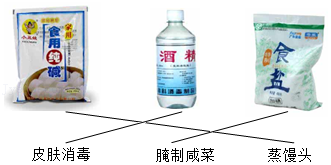
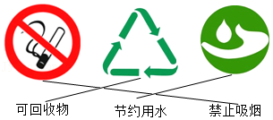
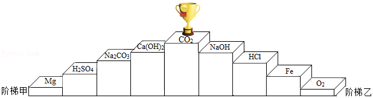
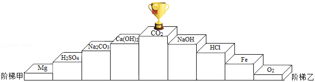
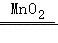
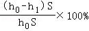
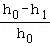
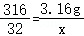

2017年北京市中考化学真题 原卷解析
2017年北京市中考化学试卷
参考答案与试题解析
一、选择题（共20分）（每小题只有1个选项符合题意．每小题1分）
1．【分析】解答此题可从节约能源、减少污染等方面分析，凡是节能减排的措施都是正确的。
【解答】解：A、人走关灯、少开空调，可节约资源保护环境，符合主题；
B、使用一次性餐具不利于环保，易造成环境污染，错误；
C、自带水杯出行可节约资源保护环境，符合主题；
D、垃圾分类回收，可节约资源保护环境，符合主题。
故选：B。
【点评】本题考查绿色化学的理念。提倡使用节能技术和节能产品，减少化石燃料的燃烧，符合绿色未来的理念。
2．【分析】这里的“氟”不是以单质、分子、原子等形式存在，而是指元素，通常用元素及其所占质量（质量分数）来描述。
【解答】解：使用的含氟牙膏中的“氟”不是以单质、分子、原子等形式存在，这里所指的“氟”是强调存在的元素，与具体形态无关。
故选：D。
【点评】本题难度不大，主要考查元素与微观粒子及物质的区别，加深对元素概念的理解是正确解答此类试题的关键。
3．【分析】A、根据红磷在氧气中燃烧的现象进行分析判断。
B、根据木炭在氧气中燃烧的现象进行分析判断。
C、根据铁丝在氧气中燃烧的现象进行分析判断。
D、根据酒精在氧气中燃烧的现象进行分析判断。
【解答】解：A、红磷在氧气中燃烧，产生大量的白烟，生成一种白色固体，故选项错误。
B、木炭在氧气中燃烧，发出白光，生成能使澄清石灰水变浑浊的气体，故选项错误。
C、铁丝在氧气中剧烈燃烧，火星四射，生成一种黑色固体，故选项正确。
D、酒精在氧气中燃烧，发出白光，放出热量，故选项错误。
故选：C。
【点评】本题难度不大，掌握常见物质燃烧的现象即可正确解答，在描述物质燃烧的现象时，需要注意光和火焰、烟和雾的区别。
4．【分析】一些必需的微量元素对人体的作用非常大，人体每天都应摄取适量的微量元素，否则会患各种疾病；根据人体内各种元素的生理功能、缺乏症进行分析判断即可。
【解答】解：A．铁是合成血红蛋白的主要元素，缺乏会患贫血，故选项正确。
B．钙是构成骨胳和牙齿的主要成分，幼儿和青少年缺乏会患佝偻病，导致骨骼畸形，老年人缺乏会患骨骼疏松，故选项错误。
C．碘是合成甲状腺激素的主要成分，缺乏会患甲状腺肿大，故选项错误。
D．锌影响人的发育，缺乏会食欲不振，生长迟缓，发育不良，故选项错误。
故选：A。
【点评】本题难度不大，主要考查营养元素与人体健康的关系，掌握人体内元素的分类、生理功能、食物来源、缺乏症，摄入时的注意事项等是正确解题的关键。
5．【分析】物理性质是指物质不需要发生化学变化就表现出来的性质。包括颜色、状态、气味、熔点、沸点、硬度、密度、溶解性、挥发性、导电性、导热性等。化学性质是指物质在化学变化中表现出来的性质。包括可燃性、氧化性、还原性、毒性、稳定性、酸碱性等。
【解答】解：A、颜色不需要发生化学变化就表现出来，属于物理性质，故A错；
B、密度不需要发生化学变化就表现出来，属于物理性质，故B错；
C、可燃性需要发生化学变化才能表现出来，属于化学性质，故C正确；
D、沸点不需要发生化学变化就表现出来，属于物理性质，故D错。
故选：C。
【点评】物理性质、化学性质是一对与物理变化、化学变化有密切关系的概念，联系物理变化、化学变化来理解物理性质和化学性质，则掌握起来并不困难。
6．【分析】A．根据一氧化碳的毒性来分析；
B．根据黄曲霉素的毒性来分析；
C．根据水是生命之源来分析；
D．根据甲醛能破坏蛋白质的结构进行分析。
【解答】解：A．一氧化碳易与人体血液中的血红蛋白结合而造成人体中毒，故不合题意；
B．黄曲霉素是一种致癌物，故不合题意；
C．水是生命之源，是人体所需六大营养素之一，不会损害人体健康，故符合题意；
D．甲醛有毒，能破坏人体蛋白质的结构，使蛋白质变性，故不合题意。
故选：C。
【点评】与人类生产生活相关的化学知识是中考的热点，了解生活中常见的有毒物质（一氧化碳、黄曲霉毒素、甲醛、亚硝酸钠、瘦肉精、苏丹红等）的相关知识即可正确解题。
7．【分析】根据图中元素周期表可以获得的信息：原子序数、相对原子质量、元素符号、元素种类等，进行分析判断即可。
【解答】解：A．根据元素周期表中的一格中获取的信息，该元素的原子序数为24，故选项说法正确；
B．根据元素周期表中的一格中获取的信息，该元素的名称是铬，属于金属元素，故选项说法错误；
C．根据元素周期表中的一格中获取的信息，该元素的原子序数为24；根据原子序数＝质子数＝核外电子数，则原子的核外电子数为24，故选项说法错误；
D．根据元素周期表中的一格中获取的信息，该元素的相对原子质量为52.00，没有克，故选项说法错误。
故选：A。
【点评】本题难度不大，考查学生灵活运用元素周期表中元素的信息及辨别元素种类的方法进行分析解题的能力。
8．【分析】物质分为混合物和纯净物，混合物是由两种或两种以上的物质组成，糖水、食醋、大理石都属于混合物；纯净物是由一种物质组成。纯净物又分为单质和化合物。由同种元素组成的纯净物叫单质；由两种或两种以上的元素组成的纯净物叫化合物。
【解答】解：A、氧气是一种物质，属于纯净物，故选项正确；
B、糖水中有糖和水，属于混合物，故选项错误；
C、食醋中有醋酸、水等物质，属于混合物，故选项错误；
D、大理石中有碳酸钙和杂质，属于混合物，故选项错误；
故选：A。
【点评】本考点考查了物质的分类，要加强记忆混合物、纯净物、单质、化合物等基本概念，并能够区分应用。本考点的基础性比较强，主要出现在选择题和填空题中。
9．【分析】区别两瓶无色气体，要根据两种气体性质差的别，设计的方案能出现两种明显不同的实验现象，才能鉴别两种气体。
【解答】解：A、氧气和二氧化碳均是没有气味的气体，用闻气味的方法无法鉴别，故选项错误。
B、氧气和二氧化碳均是没有颜色的气体，观察颜色无法鉴别，故选项错误。
C、二氧化碳能与氢氧化钠溶液反应生成碳酸钠和水，但无明显变化，氧气不与氢氧化钠溶液反应，不能鉴别，故选项错误。
D、把燃着的木条分别伸入两瓶气体中，若木条熄灭，则是二氧化碳；若木条燃烧更旺，则是氧气，现象明显，能一次鉴别出这两瓶气体，故选项正确。
故选：D。
【点评】本题考查了常见气体的鉴别方法，解题的关键是利用所要鉴别气体的性质的差别，根据实验中是否出现明显的不同现象判断能否鉴别。
10．【分析】根据分子的表示方法：正确书写物质的化学式，表示多个该分子，就在其化学式前加上相应的数字进行解答。
【解答】解：分子的表示方法：正确书写物质的化学式，表示多个该分子，就在其化学式前加上相应的数字，所以2个氢分子可表示为：2H2；
故选：B。
【点评】本题主要考查学生对化学用语的书写和理解能力，题目设计既包含对化学符号意义的了解，又考查了学生对化学符号的书写，考查全面，注重基础，题目难度较易。
11．【分析】土壤显微酸性，即土壤的pH略小于7，因此该地区不适宜种植在碱性土壤中生长的作物；根据作物最适宜的pH范围做出判断。
【解答】解：A、花生最适宜的土壤为微酸性，适宜该地区得种植；故A不正确；
B、苹果最适宜的土壤为酸性，适宜该地区得种植；故B不正确；
C、西瓜最适宜的土壤为微酸性，适宜该地区得种植；故C不正确；
D、沙枣最适宜的土壤为弱碱性，不适宜该地区得种植；故D正确；
故选：D。
【点评】酸碱性与pH关系为：pH大于7为碱性且越大碱性越强，pH小于7为酸性且越小酸性越强，pH等于7为中性。
12．【分析】化学反应的类型有四个：化合反应、分解反应、置换反应和复分解反应。化合反应是有两种或两种以上的物质生成一种物质的化学反应，特征是：多变一。分解反应是由一种物质生成两种或两种以上的物质的反应，特征是：一变多；置换反应是一种单质和一种化合物反应生成另一种单质和另一种化合物的化学反应，2H2+SiCl4 Si+4HCl，该反应属于置换反应。复分解反应是两种化合物互相交换成分生成另外两种化合物的反应。
Si+4HCl，该反应属于置换反应。复分解反应是两种化合物互相交换成分生成另外两种化合物的反应。
【解答】解：A、化合反应是有两种或两种以上的物质生成一种物质的化学反应，故选项错误；
B、分解反应是由一种物质生成两种或两种以上的物质的反应，故选项错误；
C、置换反应是一种单质和一种化合物反应生成另一种单质和另一种化合物的化学反应，2H2+SiCl4Si+4HCl，该反应属于置换反应，故选项正确；
D、复分解反应是两种化合物互相交换成分生成另外两种化合物的反应，故选项错误；
故选：C。
【点评】本考点考查了基本反应类型的判断，要牢记四个基本反应类型的概念，并会理解应用。本考点基础性比较强，主要出现在选择题和填空题中。
13．【分析】物质的性质决定用途，可以根据物质的性质方面进行分析、判断，从而得出正确的结论．
【解答】解：A、氧气具有助燃性，但本身不可以燃烧，故氧气不可以用做燃料，故描述错误；
B、二氧化碳是植物光合作用的原料，因此可作气体肥料，故描述正确；
C、干冰能升华吸热，可以用于人工降雨，故描述正确；
D、铜丝具有良好的导电性，可用作导线，故描述正确。
故选：A。
【点评】本题难度不大，物质的性质决定物质的用途，掌握常见化学物质的性质和用途是正确解答此类题的关键．
14．【分析】根据化合物中各元素质量比＝各原子的相对原子质量×原子个数之比，进行分析解答。
【解答】解：尿素中C、O、N、H四种元素的质量比＝12：16：（14×2）：4＝3：4：7：1，氮元素的质量分数最大，则表示氮元素质量分数的是①。
故选：A。
【点评】本题难度不大，考查同学们结合新信息、灵活运用化学式的有关计算进行分析问题、解决问题的能力。
15．【分析】根据一氧化碳具有还原性，能与氧化铁反应生成铁和二氧化碳，结合一氧化碳具有可燃性、实验的现象、注意事项，进行分析解答。
【解答】解：A、一氧化碳具有还原性，能与氧化铁反应生成铁和二氧化碳，a处红棕色粉末变为黑色，故选项说法正确。
B、该化学方程式没有注明反应条件高温，且配平错误，正确的化学方程式为3CO+Fe2O32Fe+3CO2，故选项说法错误。
C、二氧化碳能使澄清的石灰水变浑浊，b处澄清石灰水变浑浊，证明有CO2生成，故选项说法正确。
D、根据一氧化碳具有可燃性，为防止污染空气，可利用点燃的方法进行尾气处理，故选项说法正确。
故选：B。
【点评】本题难度不大，掌握一氧化碳还原氧化铁的反应原理、实验现象等是正确解答本题的关键。
依据实验和溶解度曲线回答16～19题．

25℃时，向下列4只盛有100g水的烧杯中，分别加入不同质量的KCl固体，充分溶解．
16．【分析】根据溶解度曲线以及溶液的质量＝溶质的质量+溶剂的质量来分析
【解答】解：结合溶解度曲线图，25℃时，氯化钾的溶解度远大于10g，所以在100g水中加入10gKCl未达到饱和，可以完全溶解，则溶液质量＝溶质质量+溶剂质量＝100g+10g＝110g。
故选：D。
【点评】本题考查的是溶解度的概念及其应用，完成此题，可以依据已有的知识进行．
17．【分析】根据溶解度曲线图，25℃时KCl的溶解度约为35g，据溶解度的含义判断选项中的溶液是否达到饱和状态，进行分析判断．
【解答】解：由溶解度曲线图，25℃时KCl的溶解度约为35g，含义是25℃时，100g水中最多能溶解氯化钾35g，溶液达到饱和状态。
A、25℃时氯化钾的溶解度为35g，含义是25℃时，100g水中最多能溶解氯化钾35g，溶液达到饱和状态；25℃时，向100g水中加入10g氯化钾，所得溶液是不饱和溶液，故选项错误。
B、25℃时氯化钾的溶解度为35g，含义是25℃时，100g水中最多能溶解氯化钾35g，溶液达到饱和状态；25℃时，向100g水中加入20g氯化钾，所得溶液是不饱和溶液，故选项错误。
C、25℃时氯化钾的溶解度为35g，含义是25℃时，100g水中最多能溶解氯化钾35g，溶液达到饱和状态；25℃时，向100g水中加入30g氯化钾，所得溶液是不饱和溶液，故选项错误。
D、25℃时氯化钾的溶解度为35g，含义是25℃时，100g水中最多能溶解氯化钾35g，溶液达到饱和状态；25℃时，向100g水中加入40g氯化钾，不能全部溶解，所得溶液是饱和溶液，故选项正确。
故选：D。
【点评】本题难度不大，掌握溶解度的含义、饱和溶液的特征等并能灵活运用是正确解答本题的关键．
18．【分析】大多数物质的不饱和溶液变为饱和溶液，常用的方法有：增加溶质，蒸发溶剂，降低温度，据此进行分析判断．
【解答】解：结合溶解度曲线图，KCl的溶解度随温度升高而增大，由不饱和状态向饱和状态转化，可以通过降低温度，蒸发溶剂，或增加溶质氯化钾。溶液具有均一性，倒出部分溶液不能改变氯化钾溶液的状态。
故选：C。
【点评】本题难度不大，掌握大多数物质不饱和溶液变成饱和溶液一般采取三种方法：增加溶质、恒温蒸发溶剂、改变温度是正确解答本题的关键．
19．【分析】根据题目信息和溶解度曲线可知：25℃时，100g水中最多能溶解的KCl质量约为35g，因此烧杯①②③不饱和，烧杯④是饱和溶液，并且烧杯底部有固体．④中溶液的溶质质量分数＝
×100%≈26%．
【解答】解：25℃时，100g水中最多能溶解的KCl质量约为35g，因此烧杯①②③不饱和，烧杯④是饱和溶液，并且烧杯底部有固体。④中溶液的溶质质量分数＝
×100%≈26%；
故选：A。
【点评】本考点考查了溶解度曲线及其应用，通过溶解度曲线我们可以获得很多信息；还考查了有关溶液和溶质质量分数的计算，有关的计算要准确，本考点主要出现在选择题和填空题中．
20．【分析】氢氧化钠溶液与稀盐酸反应生成氯化钠和水，中和反应放出热量，根据图象中pH值的变化是从小于7逐渐的减小到大于7，进行分析判断。
【解答】解：A、由稀NaOH溶液与稀盐酸反应过程中温度的变化图可知，反应过程中有热量放出，故选项说法正确。
B、30s时，溶液的pH小于7，溶液显酸性，溶液中溶质为HCl和NaCl，故选项说法正确。
C、图象中pH值的变化是从小于7逐渐的增大到大于7，可知原溶液显酸性，然后不断的加入碱性溶液，使pH增大，说明是把氢氧化钠溶液滴加到稀盐酸中，故选项说法错误。
D、由稀NaOH溶液与稀盐酸反应过程中温度的变化图可知，从20s到40s，溶液的温度升高，酸性减弱，pH增大，故选项说法正确。
故选：C。
【点评】本题难度不是很大，主要考查了中和反应及其应用，掌握溶液的酸碱性和溶液pH大小之间的关系、从数形结合的角度理解中和反应是正确解答本题的关键。
二、非选择题（共60分）
21．【分析】物质的性质决定物质的用途，根据物质的性质进行分析解答即可．
【解答】解：A酒精用途：可用于消毒，实验室作液体燃料等；食盐用途：生活上调味剂，腌制食物，农业上选种子，医疗上配制生理盐水等；纯碱可用于蒸馒头．
B是禁止吸烟标志，是可回收物标志，是节约用水标志．
故填：A

；B
．【点评】掌握物质的性质和用途的关系是正确解答本题的关键．
22．【分析】（1）油脂是植物的油和动物的脂肪的简称；（2）碳酸氢钠的俗称是小苏打。
【解答】解：（1）油脂主要来源：动物的脂肪、植物油，所以植物油属于油脂。
（2）碳酸氢钠俗称小苏打
故答案为：（1）植物油。（2）小苏打。
【点评】解答本题关键是知道油脂的来源，熟悉碳酸氢钠的俗称。
23．【分析】（1）含有氮元素的肥料称为氮肥，含有磷元素的肥料称为磷肥，含有钾元素的肥料称为钾肥，同时含有氮、磷、钾三种元素中的两种或两种以上的肥料称为复合肥；
（2）根据化学方程式的书写方法考虑；（3）根据图示过程进行具体分析。
【解答】解：（1）找对应元素，包含的N、P、K的哪种元素就属于对应元素化肥，硫酸钾中含有钾元素，属于钾肥。
（2）波尔多液主要由硫酸铜和氢氧化钙混合配制而成，不能用铁制品盛放的原因是由于铁会与硫酸铜反应生成铜和硫酸亚铁：Fe+CuSO4＝Cu+FeSO4
（3）图中给资料，面粉能将葡萄皮清洗干净，A正确；题干中“葡萄和葡萄皮中都有丰富的营养价值”。B正确；“富含糖类不宜多食”C正确。故选ABC。
故答案为：（1）钾（2）Fe+CuSO4＝Cu+FeSO4（3）ABC。
【点评】解答本题关键是熟悉化学肥料的分类方法，知道化学方程式的书写注意事项。
24．【分析】根据电解水试验的现象和结论分析回答有关的问题。电解水时：“正氧负氢，氢二氧一”
【解答】解：
（1）根据电解水实验，正极产生氧气，负极产生氢气，且氧气与氢气的体积比为1：2，由图可知，试管2中生成的气体为氧气；
（2）电解水反应的化学方程式为：2H2O2H2↑+O2↑。
答案：
（1）氧气/O2
（2）2H2O2H2↑+O2↑。
【点评】本题较为简单，了解电解水实验的现象和结论即可分析解答。
25．【分析】（1）根据是否生成新物质来分析；
（2）根据在化合物中正负化合价代数和为零、各元素的质量比为构成分子的各原子的相对原子质量之比进行解答。
【解答】解：（1）蒸气冷凝器中发生的是水蒸气遇冷凝结成水的过程，没有生成新物质，发生的属于物理变化；故填：物理；
（2）根据在化合物中正负化合价代数和为零，可得二氧化硅中硅元素的化合价为：x+（﹣2）×2＝0，
则x＝+4；
CaCl2中钙、氯元素的质量比为40：（35.5×2）＝40：71
故填：+4；40：71。
【点评】本题难度不大，考查同学们灵活运用化学式的有关计算进行分析问题、解决问题的能力。
26．【分析】（1）根据甲烷燃烧生成了二氧化碳和水，分析写出反应的方程式；
（2）根据微观反应示意图的信息以及质量守恒定律来分析。
【解答】解：（1）甲烷燃烧生成了二氧化碳和水，反应的方程式是：CH4+2O2CO2+2H2O．故答案为：CH4+2O2CO2+2H2O；
（2）①由微观反应示意图可知，甲烷与水蒸气在一定条件下反应生成一氧化碳和氢气；故填：CH4+H2OCO+3H2；
②在化学反应前后，原子的种类、数目保持不变，所以图2横线处填写内容是由两个氢原子构成的氢分子﹣﹣；故填：。
【点评】本题主要考查了化学反应中微观粒子方面的知识，明确每个模型表示的含义，这是解决这类题目的关键。
27．【分析】（1）根据空气中氮气和氧气应该均匀分布，且氮气与氧气的体积比约为4：1分析；
（2）根据化学方程式的书写方法进行分析；
（3）根据复分解反应的规律进行分析。
【解答】解：（1）空气中氮气和氧气应该均匀分布，且氮气与氧气的体积比约为4：1；
（2）宇航员呼出的CO2用氢氧化锂（LiOH）吸收，生成Li2CO3和H2O，反应的化学方程式为2LiOH+CO2═Li2CO3+H2O；
（3）通过复分解反应规律可知Ca（OH）2与Li2CO3发生复分解反应又生成了氢氧化锂。
故答案为：（1）C；（2）2LiOH+CO2═Li2CO3+H2O；（3）LiOH。
【点评】此题难度不大，掌握空气的成分、化学方程式的书写方法以及复分解反应的规律等即可顺利解答。
28．【分析】（1）根据表中信息进行分析解答；
（2）根据文章中第三段第二行说明了葡萄酒酿制过程中添加SO2的原因解答；
（3）根据图示进行分析解答；
（4）根据文章提示进行分析解答；
（5）根据题目所给信息进行分析解答。
【解答】解；
（1）由图1中可知：食糖中SO2的最大残留量为0.1g/kg。
（2）由题目所给信息可知：葡萄酒酿制过程中SO2的作用是：防止葡萄酒在陈酿和贮藏的过程中被氧化，抑制葡萄汁中微生物的活动
（3）由题目所给图示可知：用硫制硫酸的主要过程中，涉及到的含硫物质有：S、SO2、SO3、H2SO4。
（4）硫酸工业生产中，吸收尾气中SO2的物质是用氨水吸收。
（5）A选项煤块粉碎并不能改变煤的含硫量，最终生成的二氧化硫质量不变，A不对；
B选项对燃煤进行脱硫显然可以降低生成二氧化硫的质量；
C选项文章最后一段有原话，煤改气或改电可以改善空气质量；D选项合理的循环使用尾气中的二氧化硫，可以减少SO2的排放。
答案：
（1）0.1；
（2）防止葡萄酒在陈酿和贮藏的过程中被氧化，抑制葡萄汁中微生物的活动。
（3）SO2、SO3；
（4）氨水；
（5）BCD
【点评】本题是一道化学和技术的题目，可以根据所学知识来回答，难度不大。空气中的二氧化硫主要来自于化石燃料的燃烧、含硫矿石的冶炼以及硫酸、纸浆生产等产生的工业废气。
29．【分析】（1）石灰石的主要成分为CaCO3；
（2）氧化钙和水反应生成氢氧化钙；
（3）过筛即过滤，根据过滤原理可知，过筛可拦截大于筛孔直径的颗粒；
（4）根据乳化池中的反应可知，生浆池中的成分为Ca（OH）2，则碳化塔中参与反应的物质为CO2和Ca（OH）2，二氧化碳和氢氧化钙反应生成碳酸钙沉淀和水。
【解答】解：（1）石灰石主要成分是碳酸钙，碳酸钙的化学式为CaCO3。
故填：CaCO3。
（2）乳化池中，生石灰与水发生反应生成氢氧化钙，其化学方程式为：CaO+H2O＝Ca（OH）2。
故填：CaO+H2O＝Ca（OH）2。
（3）过筛的目的是拦截大于筛孔直径的颗粒。
故填：大于。
（4）碳化塔中二氧化碳和氢氧化钙反应生成碳酸钙沉淀和水，反应的化学方程式为：Ca（OH）2+CO2＝CaCO3↓+H2O。
故填：Ca（OH）2+CO2＝CaCO3↓+H2O。
【点评】本题主要考查物质的性质，解答时要根据各种物质的性质，结合各方面条件进行分析、判断，从而得出正确的结论。
30．【分析】（1）碳元素以三种形式存在，C、CO、CO2，化合价分别是0、+2、+4价．
（2）因为FeO为金属氧化物，需要与酸反应才能转化为盐，从生成物FeSO4中看出加入的酸为H2SO4．
（3）根据化学反应前后元素种类不变，FeCO3中Fe元素来自于FeSO4，CO32﹣来自于NH4HCO3，所以反应物应为FeSO4和NH4HCO3．
【解答】解：（1）上述反应中的各物质，碳元素存在于C、CO、CO2，单质中元素化合价规定为零，化合物中元素化合价代数和为零，氧元素的化合价是﹣2，通过计算可知一氧化碳中碳元素化合价是+2，二氧化碳中碳元素化合价是+4，因此述反应中的各物质，碳元素呈现3种化合价．
故填：3．
（2）因为FeO为金属氧化物，需要与酸反应才能转化为盐，从生成物FeSO4中看出加入的酸为H2SO4．
故填：硫酸．
（3）根据化学反应前后元素种类不变，FeCO3中Fe元素来自于FeSO4，CO32﹣来自于NH4HCO3，所以反应物应为FeSO4和NH4HCO3．
故填：FeSO4和NH4HCO3．
【点评】本题主要考查物质的性质，解答时要根据各种物质的性质，结合各方面条件进行分析、判断，从而得出正确的结论．
31．【分析】（1）①根据氧化物是只有两种元素组成的化合物，且其中一种元素是氧元素进行分析；
根据碳酸钠俗称纯碱进行分析；
②根据硫酸和碳酸钠反应生成硫酸钠、水和二氧化碳进行分析；
（2）根据能和CO2反应的只有NaOH，能和NaOH反应的只有HCl，能和HCl反应的只有Fe和Fe2O3，但是能和O2反应的只有Fe进行分析；
（3）根据物质分类，H2SO4和HCl互换，Fe和Mg互换，均能领取奖杯进行分析．
【解答】解：（1）①氧化物是只有两种元素组成的化合物，且其中一种元素是氧元素，所以属于氧化物的是CO2；
碳酸钠俗称纯碱，化学式为：Na2CO3；
②硫酸和碳酸钠反应生成硫酸钠、水和二氧化碳，化学方程式为：Na2CO3+H2SO4＝Na2SO4+H2O+CO2↑；
（2）能和CO2反应的只有NaOH，能和NaOH反应的只有HCl，能和HCl反应的只有Fe和Fe2O3，但是能和O2反应的只有Fe，所以

；
（3）由物质分类可知，H2SO4和HCl互换，Fe和Mg互换，均能领取奖杯．
故答案为：（1）①CO2，Na2CO3；
②Na2CO3+H2SO4＝Na2SO4+H2O+CO2↑；
（2）从高到低：NaOH、HCl、Fe、O2；

（3）H2SO4和HCl（Fe和Mg）．
【点评】本题是对物质间反应的考查，解题的关键是掌握相关的物质的性质以及反应规律．
32．【分析】（1）水分子在不断运动，不断向空气中扩散；（2）根据浓硫酸具有吸水性考虑。
【解答】解：（1）由于分子在不断运动，所以水分子在不断运动，不断向空气中扩散，所以A中示数变小；
（2）浓硫酸具有吸水性，吸收空气中的水蒸气，所以质量增大。
故答案为：（1）水分子不断运动；（2）变大；浓硫酸具有吸水性；
【点评】解答本题关键是熟悉分子的性质和特点，熟悉浓硫酸的吸水性。
33．【分析】根据紫色石蕊遇碱性物质变蓝，紫色石蕊遇酸性物质变红以及中和原理分析；
【解答】解：（1）紫色石蕊遇碱性物质变蓝，孔穴6中溶液变为蓝色，说明碳酸钾溶液显碱性。
（2）紫色石蕊遇酸性物质变红，1石灰水显碱性，2稀盐酸显酸性，3水为中性，4氢氧化钠溶液显碱性，5稀硫酸显酸性，6碳酸钾溶液显碱性。
（3）3水为中性，紫色石蕊不变色，起对照作用；
（4）孔穴4中原来是氢氧化钠，向其中滴加稀硫酸，发生中和反应，方程式为2NaOH+H2SO4＝Na2SO4+2H2O．但恰好反应时，溶液显中性，溶液变为紫色。
故答案为：（1）碱性；（2）2，5；（3）3；（4）2NaOH+H2SO4＝Na2SO4+2H2O。
【点评】考查酸碱指示剂分别遇到酸性、碱性和中性物质变色情况，需要学生利用课上讲过的对比和控制变量的方法来解决问题。
34．【分析】（1）打开K1，过氧化氢在二氧化锰的催化作用下生成水和氧气，氧气能支持燃烧，进行分析解答。
（2）关闭K1、打开K2，石灰石的主要成分碳酸钙能与稀盐酸反应生成二氧化碳气体，进行分析解答。
【解答】解：（1）打开K1，过氧化氢在二氧化锰的催化作用下生成水和氧气，氧气能支持燃烧，观察到蜡烛燃烧的更旺，发出白光。反应的化学方程式为：2H2O2

2H2O+O2↑。（2）关闭K1、打开K2，石灰石的主要成分碳酸钙能与稀盐酸反应生成二氧化碳气体，B中产生二氧化碳，进入烧杯中，生成的二氧化碳不能燃烧、不能支持燃烧，能使蜡烛熄灭。
故答案为：（1）燃烧的更旺，发白光；2H2O22H2O+O2↑；
（2）B中产生二氧化碳，进入烧杯中，二氧化碳不能燃烧、不能支持燃烧，蜡烛熄灭。
【点评】本题难度不大，掌握实验室制取二氧化碳与氧气的反应原理、二氧化碳与氧气的化学性质是正确解答本题的关键。
35．【分析】A（1）根据量筒液体一般使用量筒，进行分析解答．
（2）根据浓硫酸的稀释方法（酸入水，沿器壁，慢慢倒，不断搅），进行分析解答．
B（1）滤是把不溶于液体的固体与液体分离的一种方法，根据过滤操作所需的仪器进行分析解答．
（2）根据蒸发操作的注意事项进行分析解答．
【解答】解：A（1）实验需要5.4mL浓硫酸和90mL水，量筒量程选择的依据有两点：一是保证量取一次，二是量程与液体的取用量最接近，量取两种液体用到的仪器有10mL的量筒和100mL的量筒．先用倾倒法加液到近刻度线，再改用胶头滴管加液到刻度线．
（2）稀释浓硫酸时，要把浓硫酸缓缓地沿器壁注入水中，同时用玻璃棒不断搅拌，以使热量及时地扩散；切不可把水注入浓硫酸中，这是因为浓硫酸的密度比水大，如果添加顺序颠倒，那么水会浮在水面上，又由于浓硫酸溶于水放出大量的热，能使水沸腾，容易造成酸液飞溅．
B（1）过滤是把不溶于液体的固体与液体分离的一种方法，过滤操作的装置由铁架台、烧杯、玻璃棒、漏斗四种仪器组成．
（2）蒸发时，应用玻璃棒不断搅拌，以防止局部温度过高，造成液体飞溅．
故答案为：A（1）⑤⑥⑧；（2）浓硫酸密度比水大，溶于水放出大量热，用玻璃棒不断搅拌，散热，防止液滴飞溅；
B（1）②⑨⑪⑫；（2）防止局部温度过高，造成液体飞溅．
【点评】本题难度不大，掌握蒸发操作的注意事项、浓硫酸的稀释方法、量筒的使用方法等并能灵活运用是正确解答本题的关键．
36．【分析】（1）根据活性炭的吸附性来分析；
（2）根据质量守恒定律来分析；
（3）根据铁的锈蚀来分析．
【解答】解：（1）活性炭具有吸附性，能吸附瓶内的二氧化碳，所以活性炭包增重，故填：活性炭具有吸附性，吸附二氧化碳，质量增加；
（2）铜在加热的条件下和氧气反应生成氧化铜，质量增加，所以细铜丝团下沉；故填：下沉；
（3）铁同时与水和氧气接触时发生了生锈，铁锈的质量大于铁的质量，所以一段时间后，铁粉包下沉，故填：水和氧气同时接触．
【点评】本题考查了物质质量增重的原因，解题时从活性炭的吸附性、质量守恒定律等角度进行分析，难度不大．
37．【分析】（1）锌与稀硫酸反应生成硫酸锌和氢气，为使反应停止，从将药品分离角度分析；
（2）白磷会消耗氧气，使右侧管中压强变小，空气中氧气体积分数＝氧气体积÷空气体积。
【解答】解：（1）锌与稀硫酸反应生成硫酸锌和氢气，化学方程式为：Zn+H2SO4＝ZnSO4+H2↑；为使反应停止，关闭K1，左管中产生的氢气无法排除，管内压强变大，将稀硫酸压回到右管中，锌与稀硫酸分离，反应停止；
（2）左侧玻璃管内白磷燃烧消耗氧气，使右侧管中压强变小，打开K2，右侧水进入左侧管中，右管中液面下降；被吸入左侧的水即为消耗氧气的体积，假设管的横截面积为s，所以最终测得的空气中氧气体积分数为

＝
×100%。故答案为：（1）Zn+H2SO4＝ZnSO4+H2↑；关闭K1；
（2）左侧玻璃管内白磷燃烧消耗氧气，压强减小；×100%。
【点评】本题属于信息题的考查，考查了气体的制备和空气成分的探究，依据题目的信息及已有的知识进行分析，难度中等，能够考查学生的能力。
38．【分析】（1）制取装置包括加热和不需加热两种，如果用双氧水和二氧化锰制氧气就不需要加热，如果用高锰酸钾或氯酸钾制氧气就需要加热。氧气的密度比空气的密度大，不易溶于水，因此能用向上排空气法和排水法收集。
（2）根据氧气的性质，氧气是常温常压下密度大于空气，且不与空气中其他成分反应的气体，可以用向上排空气法收集
（3）实验条件的变量是KMnO4浓度，实验现象证明鸡皮发生了腐蚀，腐蚀现象差异是由实验变量造成的。
（4）实验条件的变量是KMnO4的浓度，实验现象中铜片质量的变化证明Cu被腐化，腐化现象的差异证明在相同的H2SO4浓度下，随KMnO4的浓度增大，腐化程度加剧。
（5）①证明KMnO4单独作用下铜片不腐化；
③证明H2SO4单独作用作用下铜片也不会腐化；
②证明KMnO4与H2SO4共同作用时铜发生腐化。由此得出结论。
（6）在化学变化中，原子的种类和数目不变得出8H2O。
【解答】解：Ⅰ．（1）如果用高锰酸钾制氧气就需要加热，高锰酸钾受热分解生成锰酸钾和二氧化锰和氧气，要注意配平；故答案为：2KMnO4K2MnO4+MnO2+O2↑；0.32；
设3.16g KMnO4产生O2的质量为x，
2KMnO4K2MnO4+MnO2+O2↑
316 32
3.16g x

x＝0.32g；（2）用向上排空气法收集O2的原因是：密度大于空气且不与空气中其他成分发生反应；故答案为：密度大于空气且不与空气中其他成分发生反应；
Ⅱ．（3）实验1的目的是：样品KMnO4浓度对鸡皮腐蚀性的影响；故答案为：样品KMnO4浓度对鸡皮腐蚀性的影响；
（4）实验2中通过对比②和④，得出的结论是：酸性条件下KMnO4浓度越高，腐蚀性越强；故答案为：酸性条件下KMnO4浓度越高，腐蚀性越强；
（5）实验2中，欲得出“KMnO4和硫酸共同作用对铜才有腐蚀性”的结论，需要对比：①证明KMnO4单独作用下铜片不腐化；②证明KMnO4与H2SO4共同作用时铜发生腐化；③证明H2SO4单独作用作用下铜片也不会腐化；故答案为：①②③；
（6）根据质量守恒定律，在化学变化中，原子的种类和数目不变得出8H2O，故答案为：8H2O；
【点评】本考点既考查了实验步骤的设计，又考查了化学方程式的书写，还对实验进行了评价，综合性比较强。实验探究题是近几年中考的热点之一，它包括实验方法和过程的探究，实验结论和实验规律的探究等。本题通过实验资料和实验分析，得到了正确的结论，属于结论性探究。同学们要具体分析，综合掌握。
声明：试题解析著作权属菁优网所有，未经书面同意，不得复制发布
日期：2022/3/14 14:10:17；用户：18032927792；邮箱：18032927792；学号：39962732